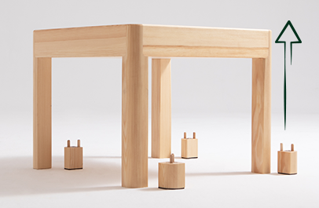

Stworzony dla dzieci.
Dzieci każdego dnia poznają świat i podejmują wiele wyzwań. Projektując zestaw Growee (stolik + krzesełko), zadbaliśmy, aby był on bezpieczny, funkcjonalny oraz trwały. To nowe „miejsce na Ziemi” dla Twojej pociechy.

Tylko drewno,
tylko natura
Uwielbiamy drewno, dlatego zestaw Growee został z niego wykonany. Postawiliśmy na minimalizm, design, którego siłą jest elegancka prostota. Produkty marki Growee wyróżnia solidna konstrukcja i wysoka trwałość..
tylko natura
Uwielbiamy drewno, dlatego zestaw Growee został z niego wykonany. Postawiliśmy na minimalizm, design, którego siłą jest elegancka prostota. Produkty marki Growee wyróżnia solidna konstrukcja i wysoka trwałość..

Rośnie
z dzieckiem
Mówi się, że dzieci rosną jak na drożdżach. Świetnie, ponieważ nasz stolik również! Wyposażyliśmy go w autorskie rozwiązanie — magnetyczne stopki do stolika o wysokości 6 centymetrów, które umożliwiają dostosowanie jego wysokości do wzrostu dziecka.
z dzieckiem
Mówi się, że dzieci rosną jak na drożdżach. Świetnie, ponieważ nasz stolik również! Wyposażyliśmy go w autorskie rozwiązanie — magnetyczne stopki do stolika o wysokości 6 centymetrów, które umożliwiają dostosowanie jego wysokości do wzrostu dziecka.
Stolik jest przeznaczony dla pociech w wieku od 2 do 5 lat.

Piękny,
dwustronny blat
Pierwsze próby samodzielnego jedzenia? A może przyszedł czas na prace artystyczne? Niezależnie od tego, czym aktualnie zajmuje się Twoje dziecko, możesz przestać martwić się o ewentualny bałagan lub zniszczenia. Przygotowaliśmy dwustronny blat, którego jedna strona jest pokryta uroczą grafiką i zabezpieczona przyjaznym lakierem. Posłuży ona za płótno, miejsce do tworzenia bądź nauki, ponieważ umieściliśmy na niej również alfabet i cyfry. Po wszystkim wystarczy przetrzeć blat wilgotną szmatką. Tak, to takie proste!
dwustronny blat
Pierwsze próby samodzielnego jedzenia? A może przyszedł czas na prace artystyczne? Niezależnie od tego, czym aktualnie zajmuje się Twoje dziecko, możesz przestać martwić się o ewentualny bałagan lub zniszczenia. Przygotowaliśmy dwustronny blat, którego jedna strona jest pokryta uroczą grafiką i zabezpieczona przyjaznym lakierem. Posłuży ona za płótno, miejsce do tworzenia bądź nauki, ponieważ umieściliśmy na niej również alfabet i cyfry. Po wszystkim wystarczy przetrzeć blat wilgotną szmatką. Tak, to takie proste!
Stabilne
krzesełko
Obłe krawędzie, mocna konstrukcja, maksymalna stabilność, oto dlaczego nasze krzesełko Growee jest stworzone dla najmłodszych. To gwarancja bezpieczeństwa. Jeśli dodamy do tego szerokie, wygodne siedzisko, otrzymujemy mebel idealny — od Growee dla Twojej pociechy.
krzesełko
Obłe krawędzie, mocna konstrukcja, maksymalna stabilność, oto dlaczego nasze krzesełko Growee jest stworzone dla najmłodszych. To gwarancja bezpieczeństwa. Jeśli dodamy do tego szerokie, wygodne siedzisko, otrzymujemy mebel idealny — od Growee dla Twojej pociechy.

Bezpieczeństwo na
szóstkę z plusem
Ostre krawędzie to coś, co nieustannie spędza sen z powiek rodzicom. Znamy to z własnego doświadczenia, dlatego projektując stolik i krzesło Growee, zatroszczyliśmy się o każdy szczegół — zaokrągliliśmy wszystkie krawędzie, a nogi krzesełka oraz stolika podkleiliśmy specjalnym filcem. Meble są stabilne, pomyślnie przeszły też testy jakości i wytrzymałości.
szóstkę z plusem
Ostre krawędzie to coś, co nieustannie spędza sen z powiek rodzicom. Znamy to z własnego doświadczenia, dlatego projektując stolik i krzesło Growee, zatroszczyliśmy się o każdy szczegół — zaokrągliliśmy wszystkie krawędzie, a nogi krzesełka oraz stolika podkleiliśmy specjalnym filcem. Meble są stabilne, pomyślnie przeszły też testy jakości i wytrzymałości.
Zestaw Growee to wybór na lata.
Materiały edukacyjne,
prezent dla Ciebie i dziecka
Czas w domu musi być odpowiednio wykorzystany. Pomoże w tym Pierwszy elementarz — zestaw materiałów edukacyjnych do kolorowania, rysowania szlaczków oraz nauki pisania liter i cyfr. To wartościowy prezent, którym chcemy obdarować każdego, kto wybierze zestaw Growee.
prezent dla Ciebie i dziecka
Czas w domu musi być odpowiednio wykorzystany. Pomoże w tym Pierwszy elementarz — zestaw materiałów edukacyjnych do kolorowania, rysowania szlaczków oraz nauki pisania liter i cyfr. To wartościowy prezent, którym chcemy obdarować każdego, kto wybierze zestaw Growee.
Gotowy
do użycia
Zestaw Growee jest gotowy do użycia od razu po wyjęciu z kartonu. Niczego nie musisz szukać, składać czy skręcać. Niemal natychmiast możesz rozpocząć naukę i zabawę wraz z dzieckiem. Wygodnie, bez straty czasu, bo przecież liczy się każda chwila.
do użycia
Zestaw Growee jest gotowy do użycia od razu po wyjęciu z kartonu. Niczego nie musisz szukać, składać czy skręcać. Niemal natychmiast możesz rozpocząć naukę i zabawę wraz z dzieckiem. Wygodnie, bez straty czasu, bo przecież liczy się każda chwila.

Skrytka
na skarby
Miejsce na skarb piracki? Skrytka na ulubione zabawki? W stoliku Growee Twoje dziecko znajdzie przestrzeń, w której może ukryć swoje drogocenne rzeczy. Skrytka pod blatem posłuży za miejsce do przechowywania artykułów papierniczych, książek czy zabawek. Dzięki niej łatwiej zachowasz porządek.
na skarby
Miejsce na skarb piracki? Skrytka na ulubione zabawki? W stoliku Growee Twoje dziecko znajdzie przestrzeń, w której może ukryć swoje drogocenne rzeczy. Skrytka pod blatem posłuży za miejsce do przechowywania artykułów papierniczych, książek czy zabawek. Dzięki niej łatwiej zachowasz porządek.

Czysty
w mig
Jest czas na zabawę i jest czas na porządki. Dzięki stolikowi Growee Twoje dziecko polubi również ten drugi. Zabezpieczony przyjaznym lakierem blat wystarczy przetrzeć wilgotną szmatką, aby z powrotem cieszyć się czystością. Pozostałą część konstrukcji pokryliśmy specjalnym lakierem do drewna, który sprawia, że nie łapie ona drobinek kurzu ani innych zabrudzeń.
w mig
Jest czas na zabawę i jest czas na porządki. Dzięki stolikowi Growee Twoje dziecko polubi również ten drugi. Zabezpieczony przyjaznym lakierem blat wystarczy przetrzeć wilgotną szmatką, aby z powrotem cieszyć się czystością. Pozostałą część konstrukcji pokryliśmy specjalnym lakierem do drewna, który sprawia, że nie łapie ona drobinek kurzu ani innych zabrudzeń.